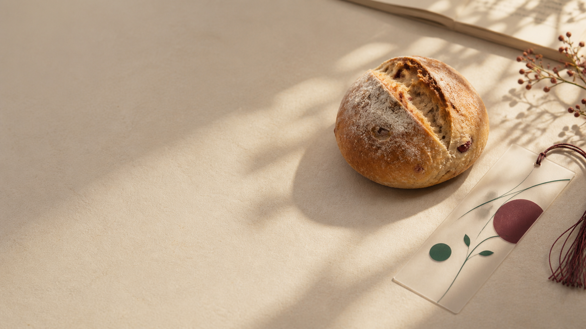

지에스25특별 기획
한정판
맛으로 만나는 문장01 — 04
01 / 함께 만든 이야기
책장을 넘기듯
빵을 골라보세요.
민음사의 세계문학전집과 시집의 제목을 빵의 이름과 연결하고, 각 빵의 간식 경험에 어울리는 문장을 골랐습니다. 빵 옆에서 어떤 문장이 기다리고 있을까요?
02 / 문학빵 모음
오늘의 문학빵
카드를 눌러
맛의 문장을 읽어보세요.
오늘의 문장
제품 카드를 선택하면 오늘의 문장이 나타납니다.
04 / 내 주변 빵 찾기